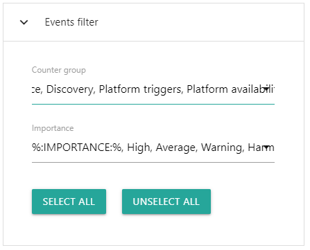
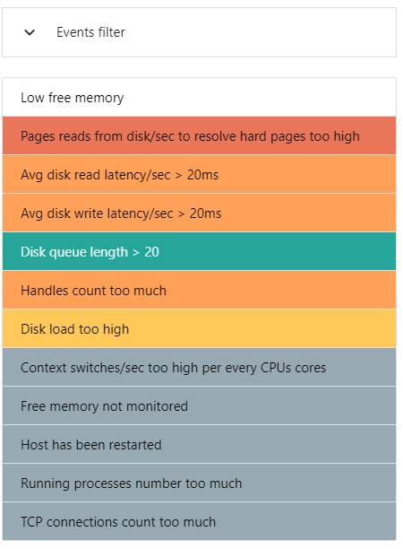
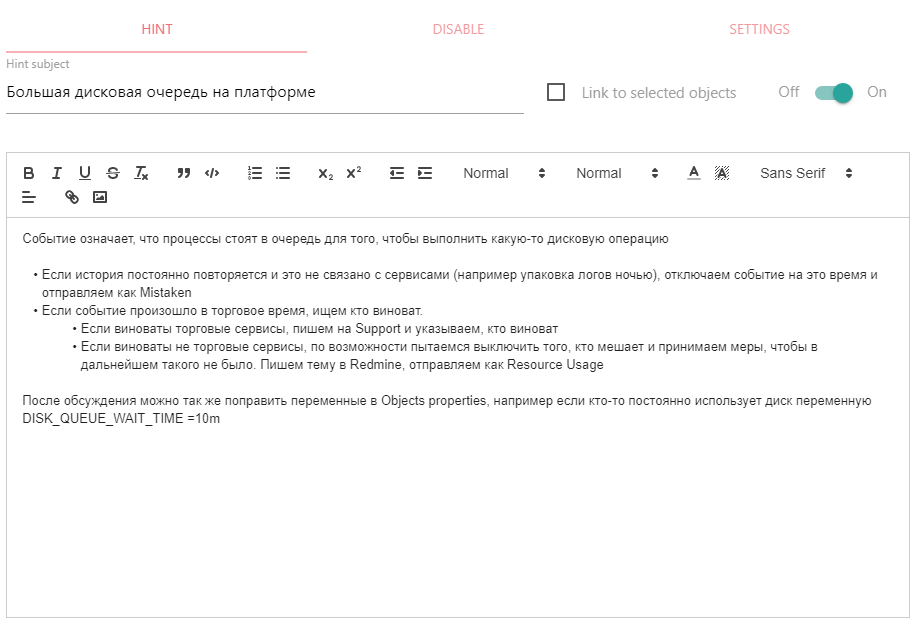
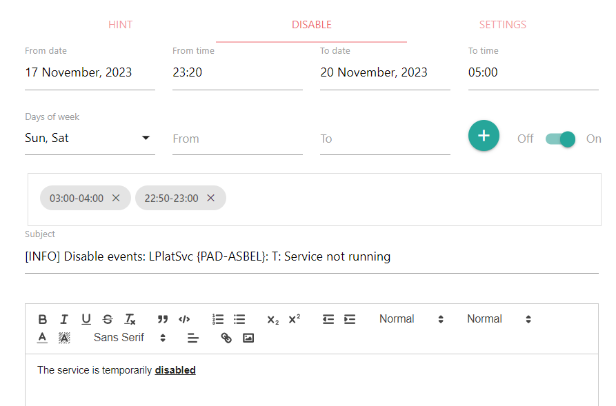
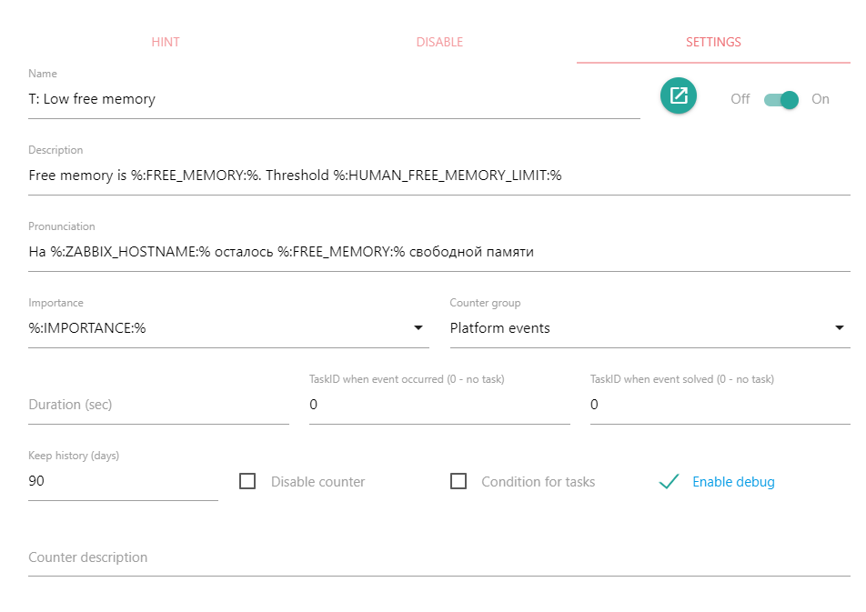

Предназначение Events editor
Events editor позволяет редактировать подсказки по событиям, настройки событий, время отключения и информацию об отключении событий.
Возвращаемое значение: нет
Описание интерфейса
События в списке можно фильтровать по важности, группам и объектам, к которым они привязаны. Вкладки HINT, DISABLE, SETTINGS отвечают за редактирование подсказок к событиям, отключение событий и свойства событий . При запуске действия сохраняются только данные с активной вкладки. Для сохранения данных с неактивных вкладок необходимо сначала сделать их активными. Например, если необходимо поправить подсказку для события и параметры события, необходимо запустить действие два раза: один раз с активной вкладкой HINT, второй раз с активной вкладкой SETTINGS.
Список событий и фильтрация
Фильтрация событий
При нажатии на заголовок "Events filter" откроется диалог для фильтрации событий. События можно фильтровать по группам в которые входят каунтеры и по важности. Кнопки "Select all" и "Unselect all" позволяют выбрать или снять выбор с фильтров событий. Если выбраны объекты, будут отображаться только события, подключенные к выбранным объектам. Для подключения и отключения событий к объектам используется действие Counter settings.
Список событий
Колонка со списком событий служит для выбора событий. Выбирать события можно нажатием на него кнопкой мыши. Если нажата клавиша Ctrl, предыдущие выбранные события останутся выбранными. Таким образом можно выбрать несколько событий и редактировать их одновременно. События отсортированы по важности и, в случае одинаковой важности, по имени события.
HINT (Подсказки)
Подсказки по событиям отображаются, если нажать на элемент "hint" рядом с событием в действии Dashboard. Подсказки обычно используются для описания действий, которые необходимо выполнить при наступлении события. Подсказка может быть привязана к объектам, с которыми происходят события. В этом случае будут отображаться индивидуальные подсказки для каждого привязанного объекта. Если привязки нет, то подсказка будет отображаться для всех объектов.
- Hint subject: Заголовок для подсказки
- Link to selected objects: если выбраны объекты, и включен "Link to selected objects", то подсказка будет отображаться только если событие произошло с выбранными объектами. Если "Link to selected objects" отключен, подсказка будет отображаться для выбранных событий и для всех объектов, за исключением объектов, для которых были сделаны индивидуальные подсказки.
- Off-On: включить или отключить сохранение данных с этой вкладки.
- Текст подсказки. Можно ввести текст, вставить уже отформатированный текст или изображение с помощью стандартных комбинаций клавиш для операций Copy, Paste (например, Ctrl+C, Ctrl+V)
Если выбрано несколько событий, изменения будут применяться ко всем выбранным событиям.
DISABLE (Отключение)
Событие можно отключить до определенного времени. В этом случае наступившее событие не будет отображаться в действии Dashboard. При необходимости можно добавить интервалы времени, в которые событие должно быть отключено. Посмотреть список отключенных событий можно в действии Dashboard, таблица "Disabled events".
Если не выбраны объекты, для которых отключается событие, вкладка отключения будет недоступна.
- From date - Дата c которой событие будет отключено. Если пусто, то отключенное событие будет включено
- From time - Время c которого событие будет отключено. Если пусто, то отключенное событие будет включено
- To date - Дата до которой событие будет отключено. Если пусто, то отключенное событие будет включено
- To time - Время до которого событие будет отключено. Если пусто, то отключенное событие будет включено
- Days of week - Дни недели в которые событие будет отключено
- From - Начало временного интервала, в течение которого событие будет отключено
- To - Окончание временного интервала, в течение которого событие будет отключено
- add - Добавить установленный временной интервал. Можно добавить несколько временных интервалов. Если установить временной интервал и не добавить его, интервал не будет учитываться. Если не добавить ни одного временного интервала, событие будет отключено на весь день.
- Off-On: включить или отключить сохранение данных с этой вкладки.
- Элемент - список временных интервалов, в течение которых событие будет отключено. Можно удалить часть временных интервалов или все интервалы.
- Subject: Заголовок для описания информации об отключении событий
- Текст для описания информации об отключении событий. Можно ввести текст, вставить отформатированный текст или изображение с помощью стандартных комбинаций клавиш для операций Copy, Paste (например, Ctrl+C, Ctrl+V)
Если выбрано несколько событий, изменения будут применяться ко всем выбранным событиям.
SETTINGS (Настройки)
Вкладка отвечает за редактирование параметров каунтера и коллектора для выбранных событий. Параметры каунтера и коллектора, отвечающего за событие, так же можно редактировать в действии Counter settings
- Name - Имя каунтера, для события. Если выбрано несколько событий, этот параметр изменить нельзя
- open_in_new - Открыть в новом окне действие Counter settings для выбранного события. Для нескольких выбранных событий действие открыть нельзя.
- Off-On: включить или отключить сохранение данных с этой вкладки.
- Description - Описание события, может сдержать переменные каунтера. Описание появляется в действии Dashboard при возникновении события Если выбрано несколько событий, этот параметр изменить нельзя
- Pronunciation - Произношение для события, может сдержать переменные каунтера. Если браузер и операционная система поддерживает возможность произношения текста через систему TTS, значение этого поля будет произнесено в случае возникновения события. Если выбрано несколько событий, этот параметр изменить нельзя
- Importance - Важность события. Список настраивается в файле настроек config.json для действия Dashboard. Если выбрано несколько событий и их важность не совпадает, элемент для настройки важности останется пустым. В этом случае, при сохранении уже настроенная важность для событий не изменится, даже если она разная для выбранных событий. Если выбрать определенную важность, она будет применена ко всем выбранным событиям.
- Counter group - Группа в которую входит каунтер. Если выбрано несколько событий и их группы не совпадают, элемент для настройки групп останется пустым. В этом случае, при сохранении, уже настроенные группы событий не изменятся, даже если они разные для выбранных событий. Если выбрать определенную группу, она будет применена ко всем выбранным событиям.
- Duration (sec) - Если событие автоматически не отключается, можно установить интервал времени, в течение которого событие будет активным. Если установить интервал равным 0, то после возникновения, событие сразу будет отключено. Это можно использовать, если один каунтер генерирует различные события. В этом случае они все будут отображаться в таблице Historical events действия Dashboard. Если выбрано несколько событий и значения длительности событий не совпадают, элемент для настройки длительности останется пустым. При сохранении в любом случае длительность событий для всех выбранных событий будет установлена в значение, которое отображается в параметре. Если значение элемента для длительности события - пустое, у событий удалится настройка длительности.
- Task ID when event occurred (0 - no task) - Числовой идентификатор задачи, которая будет запущена если событие произойдет. Если 0, то задача не будет запущена. Идентификаторы задач можно посмотреть в действии Task maker. Если выбрано несколько событий и идентификаторы задач не совпадает, элемент для настройки задач останется пустым. В этом случае, при сохранении уже настроенные задачи для событий не изменятся, даже если они разные для выбранных событий. Если выбрать определенную задачу, она будет применена ко всем выбранным событиям.
- Task ID when event solved (0 - no task) - Числовой идентификатор задачи, которая будет запущена если событие прекратится. Если 0, то задача не будет запущена. Идентификаторы задач можно посмотреть в действии Task maker. Поведение при выборе нескольких событий аналогично поведению "Task ID when event occurred (0 - no task)"
- Keep history (days) - время, в течение которого в истории хранятся данные о возникновении и прекращении событий. Посмотреть историю можно с помощью действия Data browser. "1" означает, что событие произошло, "0" - что событие прекратилось. Данные о самом событии (название, время, подсказки и пр.) хранятся всегда в отдельной базе данных events. Если выбрано несколько событий и время хранения не совпадает, элемент для настройки останется пустым. В этом случае, при сохранении уже настроенные времена хранения для событий не изменятся, даже если они разные для выбранных событий. Если установить время хранения, оно будет применено ко всем выбранным событиям.
- Disable counter - отключить каунтер с событием. Если выбрано несколько событий и значение этого параметра не совпадает, элемент для настройки будет выглядеть как "полоска" (режим indeterminate). В этом случае, при сохранении уже настроенные значения для событий не изменятся, даже если они разные для выбранных событий. Если установить определенное значение параметра, оно будет применено ко всем выбранным событиям.
- Condition for task - событие может быть условием для выполнения задач. Условия настраиваются в действии Task maker. Поведение при выборе нескольких событий аналогично поведению "Disable counter"
- Enable debug - включение и отключение отладки для события. Для просмотра отладочной информации необходимо использовать действие Variables. В конфигурации ALEPIZ можно полностью отключить сбор отладочной информации. В этом случае изменение этого параметра не будет влиять на сбор информации. Включение сбора отладочной информации может значительно увеличить нагрузку на систему, что приведет к задержкам в сборе информации. Сбор отладочной информации можно устанавливать не более чем на 10 счетчиков. Желательно отказаться от сбора отладочной информации в системе, обслуживающей реальную инфраструктуру. При нажатии на "Enable debug" открывается список счетчиков, в которых эта настройка включена. Если нажать на счетчик из списка, в новом окне браузера откроется действие Counter settings с выбранным счетчиком. Поведение при выборе нескольких событий аналогично поведению "Disable counter"
- Counter description - Текстовое описание каунтера. Если выбрано несколько событий и описание событий не совпадают, элемент останется пустым. При сохранении в любом случае описание событий для всех выбранных событий будет установлено в значение, которое отображается в параметре. Если описание события - пустое, у событий удалится описание.